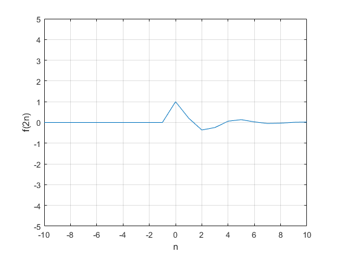

Practica 2. Señales en tiempo discreto.
Contents
Integrantes:
Juan Pablo Jimenez Leaños
Samuel Sánchez Duque.
Objetivo de la practica.
- Manipulación básica de MATLAB.
- Gráficas de señales reales y complejas discretas.
- Transformación de señales discretas (escalamientos y traslaciones).
1. Solucion del problema 3.11-2
Consider the discrete-time function f[n] = e−(n/5)cos(πn/5)u[n]. Section 3.11 uses anonymous functions in describing DT signal.
u= @(n) 1.0;
f = @(n) exp(-n/5).*cos((pi*n)/5).*u(n).*(n>=0);
n=(-10:10);
plot(n,f(n)); xlabel('t'); ylabel('f(n)'); grid;
axis([-10 10 -5 5]);
stem(n,f(n))
grid on
axis([-10 10 -5 5]);
plot(n,f(2*n)); xlabel('n'); ylabel('f(2n)'); grid; axis([-10 10 -5 5]);
stem(n,f(2*n))
grid on
axis([-10 10 -5 5]);
plot(n,f(n/2)); xlabel('t'); ylabel('f(n/2)'); grid; axis([-10 10 -5 5]);
stem(n,f(n/2))
grid on
axis([-10 10 -5 5]);